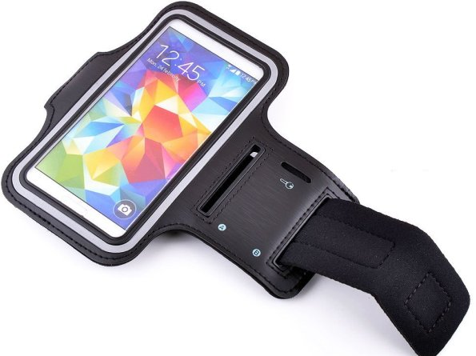

UC Irvine Machine Learning Repository Center for Machine
Learning and Intelligent Systems
Samsung Galaxy S II SmartphoneThe experiments have been
carried out with a group of 30 volunteers within an age bracket of 19 – 48 years. Each person
performed six activities (WALKING, WALKING_UPSTAIRS, WALKING_DOWNSTAIRS, SITTING, STANDING,
LAYING) wearing a smartphone (Samsung® Galaxy S II) on the waist. Using its embedded
accelerometer and gyroscope, we captured 3-axial linear acceleration and 3-axial angular
velocity at a constant rate of 50Hz. The experiments have been video-recorded to label the data
manually. The obtained dataset has been randomly partitioned into two sets, where 70% of the
volunteers was selected for generating the training data and 30% the test data.
Smartphone Harness Arm or Body Bands The sensor
signals (accelerometer and gyroscope) were pre-processed by applying noise filters and then
sampled in fixed-width sliding windows of 2.56 sec and 50% overlap (128 readings/window). The
sensor acceleration signal, which has gravitational and body motion components, was separated
using a Butterworth low-pass filter into body acceleration and gravity. The gravitational force
is assumed to have only low frequency components, therefore a filter with 0.3 Hz cutoff
frequency was used. From each window, a vector of features was obtained by calculating variables
from the time and frequency domain.
Triaxial acceleration from the accelerometer (total acceleration) and the estimated body
acceleration.
Triaxial Angular velocity from the gyroscope.
A 561-feature vector with time and frequency domain variables.
Its activity label.
An identifier of the subject who carried out the experiment.
The dataset includes the following files:
README.txt
features_info.txt: Shows information about the variables used on the feature
vector.
features.txt: List of all features.
activity_labels.txt: Links the class labels with their activity name.
train/X_train.txt: Training set.
train/y_train.txt: Training labels.
test/X_test.txt: Test set.
test/y_test.txt: Test labels.
The following files are available for the train and test data. Their
descriptions are equivalent.
train/subject_train.txt: Each row identifies the subject who performed the
activity for each window sample. Its range is from 1 to 30.
train/Inertial Signals/total_acc_x_train.txt: The acceleration signal from the
smartphone accelerometer X axis in standard gravity units 'g'. Every row shows a 128 element
vector. The same description applies for the total_acc_x_train.txt and
total_acc_z_train.txt files for the Y and Z axis.
train/Inertial Signals/body_acc_x_train.txt: The body acceleration signal
obtained by subtracting the gravity from the total acceleration.
train/Inertial Signals/body_gyro_x_train.txt: The angular velocity vector
measured by the gyroscope for each window sample. The units are radians/second.
Notes:
Features are normalized and bounded within [-1,1].
Each feature vector is a row on the text file.
The units used for the accelerations (total and body) are 'g's (gravity of earth → 9.80665
m/seg2).
The gyroscope units are rad/seg.
For more information about this dataset please contact:
activityrecognition'@'smartlab.ws